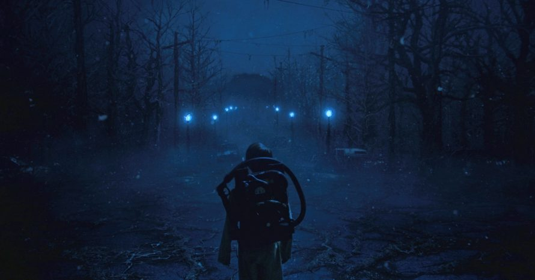
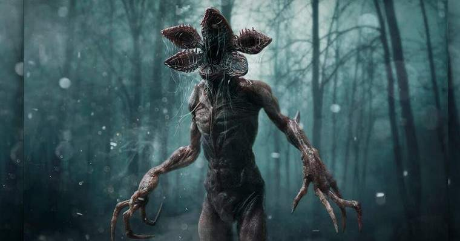
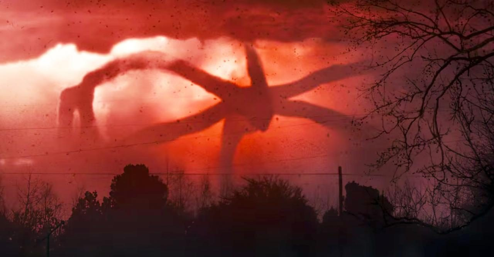

O Mundo Invertido é uma dimensão alternativa existente em paralelo ao mundo humano. A maioria, se não todas, a flora e a fauna presentes na dimensão estão ligadas em uma mente colméia controlada pelo Devorador de Mentes, formando essencialmente um enorme superorganismo. Um componente-chave dessa mente colméia era uma espécie de predadores humanóides, chamada Demogorgons, que se originavam da dimensão.
Demogorgon a criatura mais assustadora da série da Netflix! O Monstro, apelidado de Demogorgon, é uma criatura que reside em uma dimensão paralela chamada de Mundo Invertido. Quando a cobaia do teste psíquico do Laboratório Nacional de Hawkins, chamada de Eleven, entrou em contato com ele, um portão entre as dimensões foi aberto e o Monstro entrou em Hawkins.
Devorador De Mentes (também chamado de Espião) é um monstro de espécie não identificado que habita uma dimensão chamada Mundo Invertido (Uma era idêntica a Hawkins, não habitada). Ele é um animal de postura alta e que comanda e outros monstros de pequeno porte. Ele tem uma capacidade de invadir a mente das pessoas, controlando, mudando a personalidade e obtendo a fala delas
